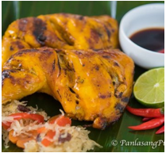

Up Fried Chicken
Ingredients:
- 1 1/2 lbs. chicken cut into serving pieces
- 2 pieces eggs
- 1 cup all-purpose flour
- 3 cups cooking oil
Marinade Ingredients
- 1 teaspoon onion powder
- 1 teaspoon garlic powder
- 2 teaspoons salt
- 1/2 teaspoon ground white pepper
- 1 cup lemon lime soda (such as 7Up)
Instructions:
- Combine chicken with marinade ingredients in a bowl. Mix well. Marinate for at least 3 hours. Drain the remaining marinade afterwards.
- Heat oil in a deep fryer or deep pot.
- Beat egg in a bowl. Dredge chicken in flour and then dip in beaten egg. Double coat by dredging in flour again. Shake off excess flour. Perform this step to all chicken pieces.
- Deep fry for a total of 15 minutes. Note: you can go longer if needed. If using lesser oll, fry one side for 10 minutes. Flip and fry the opposite side for 5 to 8 minutes.
- Remove the chicken from the fryer and place over a wire rack to cool down. Transfer to a serving plate. Serve and enjoy!
Chicken Bicol Express
Ingredients:
- 1 lb. boneless chicken breast sliced
- 1 piece Knorr Chicken Cube
- 2 cups coconut milk
- 2 pieces long green pepper sliced
- 5 pieces Thai chili pepper chopped
- 1 thumb ginger minced
- 1 tablespoon bagoong alamang
- 1 piece onion chopped
- 4 cloves garlic crushed
- 3 tablespoons cooking oil
Instructions:
- Heat oil in a cooking pot. Saute garlic, onion, and ginger.
- Once the onion softens, add chicken and chili peppers. Stir and cook until chicken turns light brown.
- Pour-in coconut milk. Let boil.
- Add Knorr Chicken Cube. Continue to cook between low to medium heat until the coconut milk reduces to half.
- Add bagoong alamang and log green peppers. Cover and cook for 2 minutes.
- Transfer to a serving bowl. Serve!
- Share and enjoy!
Creamy Chicken Pastel
Ingredients:
- 2 lbs chicken breast cut into cubes
- 1 piece Knorr Chicken Cube
- 1 piece Chorizo de Bilbao sliced
- 4 pieces hotdogs sliced
- 1 piece potato cubed
- 1 piece carrot sliced
- 1 piece red bell pepper sliced
- 1 piece green bell pepper sliced
- 3/4 cup button mushroom sliced
- 15 ounces all-purpose cream
- 1/4 cup soy sauce
- 1 piece lime
- 1 piece onion chopped
- 4 cloves garlic minced
- 3/4 cup water
- Salt and ground black pepper to taste
Instructions:
- Combine chicken, soy sauce, and lime in a large bowl. Mix well. Marinate chicken for at least 30 minutes.
- Heat oil in a cooking pot. Saute onion and garlic.
- Once the onion softens, add the chorizo. Saute for 1 minute.
- Put chicken into the pot. Saute until the color turns light brown.
- Add water. Let boil.
- Add Knorr Chicken Cube. Stir. Cover and continue to cook for 20 minutes.
- Put the sliced hotdogs into the pot. Cook in medium heat until the liquid reduces to half.
- Add potato and carrot. Pour-in all-purpose cream. Cover and cook for 8 minutes.
- Stir-in the mushroom and bell peppers. Stir. Cook for 3 minutes.
- Season with ground black pepper and salt.
- Transfer to a serving plate. Serve with warm rice. Share and enjoy!
Chicken Pasta with Creamy Basil Sauce
Ingredients:
- 3/4 lb. bowtie pasta
- 2 cups broccoli florets
- 3 tablespoons Knorr SavorRich Chicken Liquid Seasoning
- 12 ounces chicken breast cubed
- 1/2 pint heavy whipping cream
- 1 cup fresh milk
- 1/4 cup basil chopped
- 1/2 cup cheddar cheese shredded
- 1/4 all-purpose flour
- 5 tablespoons salted butter
- 1/8 teaspoon ground black pepper
- Water for cooking the pasta
Instructions:
- Prepare the chicken by adding 3 tablespoons of Knorr SavorRich Chicken Liquid Seasoning. Mix until the chicken is completely coated. Let it stay for 15 minutes.
- Boil water in a cooking pot. Add pasta. Cook for 7 minutes. Put the broccoli into the same pot. Boil for 4 minutes. Drain the water and set the pasta and broccoli aside.
- Melt 1 ½ tablespoons butter in a pan. Add the marinated chicken once the butter starts to bubble. Continue to cook for 5 minutes more after the chicken turns light brown. Set aside.
- Prepare the creamy basil sauce by melting the remaining butter on a cooking pot. Add all-purpose flour and stir thoroughly until both ingredients are well blended. Pour milk and continue to stir until it starts to boil. Add the fresh chopped basil. Stir and cook for 30 seconds. Pour heavy whipping cream and add cheese. Stir until all ingredients are well blended.
- Add the cooked chicken back into the pot. Stir. Cook for 30 seconds.
- Add red bell pepper and season with ground black pepper.
- Put the cooked pasta and broccoli back into the pot. Toss.
- Transfer to a serving plate. Share and enjoy!

Inasal
Ingredients:
- 5 pieces chicken leg quarter
Marinade
- 4 tablespoons Knorr Liquid Seasoning
- 4 tablespoons Knorr Liquid Seasoning
- 6 cloves garlic crushed
- ½ cup white vinegar
- 2 cups lemon or lime soda
- 2 stalks lemongrass
Basting sauce
- ½ cup annatto seeds
- 4 tablespoons cooking oil
- ¼ teaspoon turmeric powder
- ½ cup margarine
- ½ piece lime
Instructions:
- Chop the lemongrass and crush. Combine all marinade ingredients in a large bowl. Stir and let it stay for 10 minutes.
- Arrange chicken in large resealable bags. Use more bags if needed. Pour marinade into each bag equally. Push the air out of the bag and seal. Marinate overnight inside the refrigerator.
- Prepare the basting sauce by making annatto oil. Combine annatto seeds and 4 tablespoons cooking oil in a saucepan. Heat and continue to cook until the oil sizzles. Turn the heat off and stir until the oil turns red. Filter the oil from the seed.
- Combine annato oil with margarine, turmeric powder, and lime. You may also add some salt preferred.
- Heat-up the grill. Start grilling the chicken pieces for 2 minutes, and then turnover to grill the opposite side. Brush basting sauce everytime the chicken is flipped. Do this using medium heat to prevent the skin from burning. If the heat is uncontrollable, remove skin before grilling to prevent it from burning. Note: The chicken is cooked when the internal temperature is at least 165F.
- Arrange your chicken inasal on a plate and serve with your favorite dipping sauce. Share and enjoy!
Chicken Cordon Bleu with Dijon Cream
Ingredients:
- 2 lbs. boneless chicken breasts
- 3 to 6 pieces sliced ham
- 3 to 6 pieces Swiss cheese
- 1 1/2 cups Panko bread crumbs
- 2 eggs beaten
- 2 cups cooking oil
- Salt to taste
Dijon Cream Sauce:
- ½ cup heavy whipping cream
- 2 tablespoons Dijon mustard
- 1 ½ tablespoons butter
- 2 tablespoons minced yellow onion
- Salt to taste
- Place a plastic wrap over a flat surface. Arrange a piece of chicken over the wrap, and then cover the chicken with it. Pound the chicken using a meat tenderizer tool until it flattens.
- Sprinkle salt all over the chicken breast.
- Prepare the filling by putting a slice of cheese and ham over the chicken. Roll the chicken to cover the filling and then seal it by inserting toothpicks into the rolled chicken.
- Heat oil in a cooking pot.
- Dip the chicken in beaten egg and then roll over the bread crumbs. Do this step twice to make the coating thicker.
- Deep fry for 12 minutes in medium heat. Note. if you need to turn the chicken over to fry the opposite side, you can do so and cook it for 8 minutes. If you will deep while the chicken is fully submerged, 12 minutes should be enough, but feel free to cook no longer than 15 minutes.
- Remove the chicken from the pot. Let it cool down. Slice into serving pieces.
- Prepare the sauce by melting butter in a sauce pan. Add onion. Cook until soft.
- Pour heavy whipping cream. Let boil. Add Dijon mustard. Stir and continue to cook in medium heat until it reduces to half. Add salt to taste.
- Pour sauce over the chicken. Serve.
- Share and enjoy!